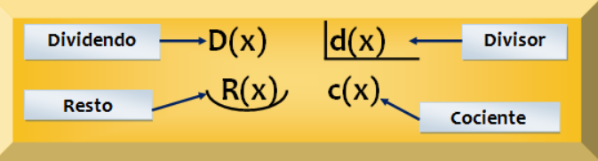
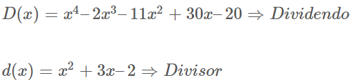
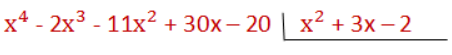
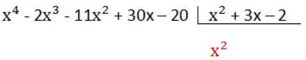
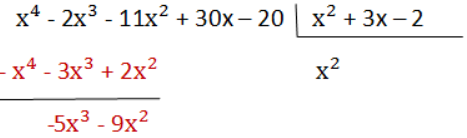
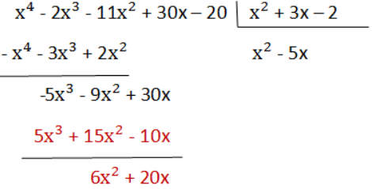
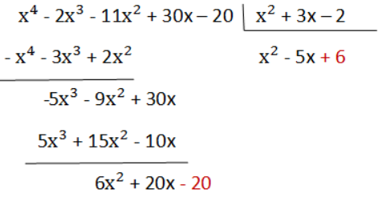
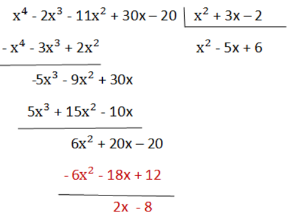
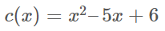
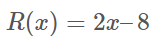

1. División de polinomios
Para dividir el polinomio P(x) entre el polinomio Q(x), necesitamos que el grado de P(x) sea mayor o igual que el grado de Q(x).
La imagen convencional de una división aritmética trasladada a la división polinómica sería:

Para comprobar el resultado podemos comprobar que se cumpla la igualdad:
Se cumple siempre que el grado del resto R(x) es menor que el grado del divisor d(x). Además, si el resto es 0 se dice que la división es exacta.
El procedimiento o algoritmo de la división polinomial que se va a describir, sigue l os mismos pasos que los de la división aritmética con números enteros, con algunas particularidades sencillas.
Consideremos los siguientes polinomios:

- Paso 1: Se colocan los polinomios igual que en la división de números y ordenados de forma creciente.

- Paso 2: Se divide el primer monomio del dividendo por el primer monomio del divisor y el resultado se pone en el cociente.

- Paso 3: Se multiplica el cociente por el divisor y el resultado se resta al dividendo. Así desaparecerá el monomio principal del dividendo.

- Paso 4: Se baja el término siguiente (+30x) y se divide, como en el paso 2, el primer monomio del dividendo (-5x3) entre el primer monomio del divisor (x2) y el resultado (-5x) se coloca en el cociente.

- Paso 5: Se multiplica -5x por el divisor y el resultado se resta al dividendo.

- Paso 6: Se baja el último término (-20) y se repite el proceso como en los pasos anteriores.
 
- Paso 7: Como el grado del resto es menor que el grado del divisor se termina la división.
Entonces obtenemos que el cociente es el polinomio:

y el resto:
